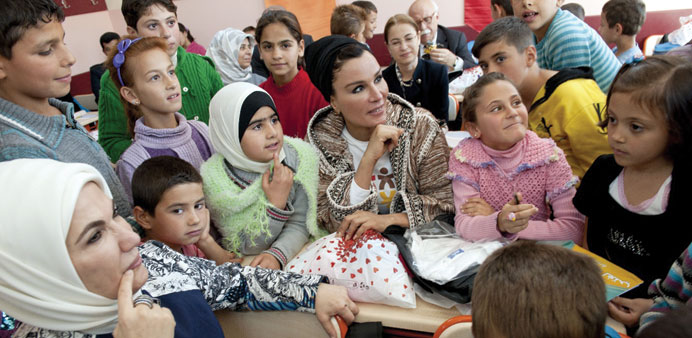
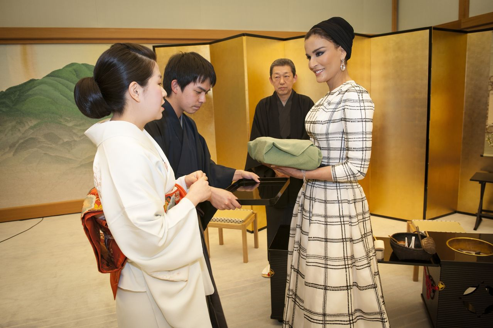
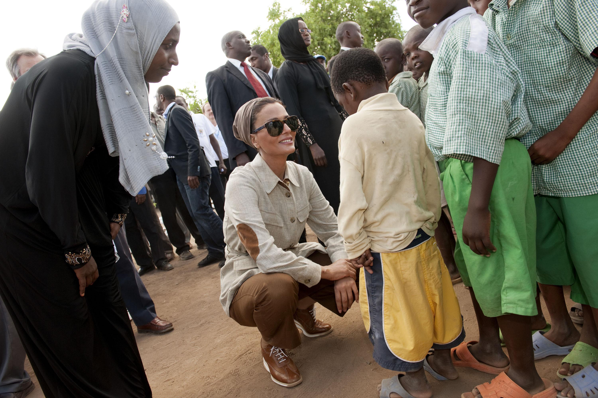
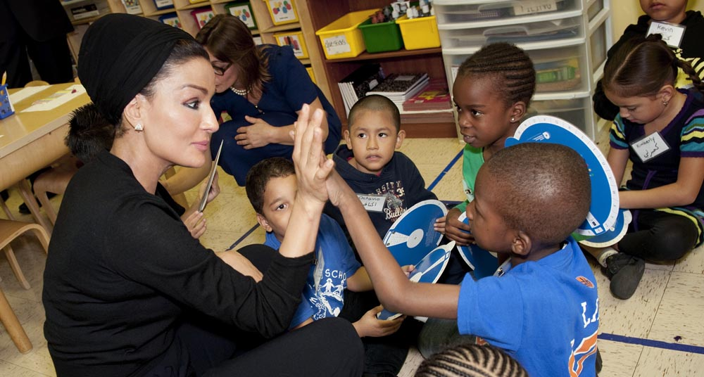

Her Highness
SHEIKHA MOZA
BINT NASSER
Chairperson of Qatar Foundation
Vice Chair of the Supreme
Council of Education

“Education is a fundamental right
A right that no one should be deprived of.”
Media Enquiries
Jane Smith
Media Officer
jane.smith@mozabintnasser.qa
+974 3387 2457
Other Enquiries
James Bond
Media Officer
james.bond@mozabintnasser.qa
+974 3387 2457
Sarah Heart
Media Officer
sarah.heart@mozabintnasser.qa
+974 3387 2457
Education Above All
November, 2014
Global initiative protecting the right of children and youth to quality education.

SHARE
The Qatari-Japanese Friendship
March, 2014
Our partnership can be symbolised by the Qatari-Japanese Friendship Fund.

SHARE
Universal Primary Education
March, 2014
HH wants to galvanise the international community to provide education for 58 million children around the world without access to school.

SHARE
Protection of Education in Insecurity and Armed Conflict
February, 2014
61 million children around the world are not in school, many of them from Arab countries.

SHARE